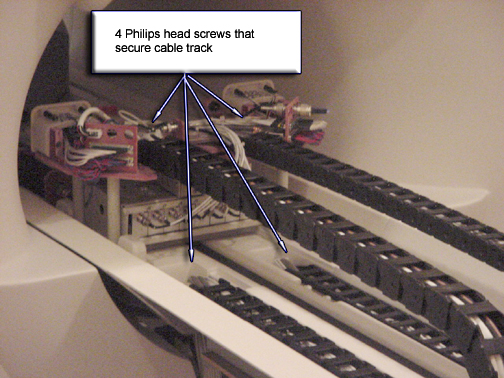

Operating Documentation
Direction 5440001-3, Rev# 6
Signa HDxt Service Methods
Module Version 3.0, Version Date 6/3/10
Operating Documentation |
| Required Persons | Preliminary Reqs | Procedure | Finalization |
|---|---|---|---|
| 1 | Not Applicable | 45-90 | Not Applicable |
This procedure details the replacement of the cable take-up and how to access cables that are contained within the cable take-up.
| NOTE: | For non-LCC magnets there will be one track as these systems
are only capable of 8-channel configuration. LCC magnets will contain
two (2) tracks. Procedure time varies. Removing and replacing the take-up takes as much as an hour. Accessing cables within the take-up can take about 90 mins. |
| Item | Qty | Effectivity | Part# | Manufacturer | |
|---|---|---|---|---|---|
| Non-magnetic Phillips head screwdriver | 1 | - | - | - | |
| Non-magnetic Flat head screwdriver | 1 | - | - | - | |
| Item | Qty | Effectivity | Part# | Manufacturer |
|---|---|---|---|---|
| Loctite 242 | 1 | - | 46-170686P1 | - |
Run LPCA to the rear of the magnet and remove the cover to the LPCA.
Position the LPCA as shown in Illustration 1 so there is access to the screws that secure the black cable take-up assembly to the LPCA and Bridge.
Illustration 1: Access To Cable Take-Up

For sites with RFS cabinet, Lock out and tag out circuit breaker labeled PHPS/SSM on the PDU. For sites with RF cabinet and Systems cabinet, Lock out and tag out circuit breaker labeled SSM.
Remove all cabling at the LPCA for the cable take-up to be replaced.
Remove all cabling at the rear pedestal (16 channel switch, etc) for the cable take-up to be replaced.
Remove the two (2) Phillips head screws that secure the cable take-up to the LPCA. See Illustration 1.
Remove the two (2) Phillips head screws that secure the cable take-up to the Bridge. See Illustration 1.
Remove the cable take-up assembly.
Place replacement cable take-up in position.
Connect all cables to the LPCA and Rear Pedestal.
Apply two drops of LockTite to each screw then connect the four screws that secure take-up assembly to Bridge and LPCA.
| NOTE: | Failure to apply two drops of proper thread locking compound to each cable chain screw before installation may result in screws working loose later and causing spike noise. |
Remove Lock-out Tag-out performed in Removal of Cable Take-Up, Step 3 and restore power.
Move LPCA to the rear of the magnet and install LPCA cover.
A flat head screw driver is used to pry open the take-up's clamps. There is a difference between the clamps on the right and those on the left which can be easily identified since one side's clamps are much wider than the other side's.
Using a flat head screwdriver, release the take-up clamps which go across the cables (see Illustration 2).
Illustration 2: Releasing Clamps

| NOTE: | Although the side with the thinner clamps can be released by using the screwdriver on the inside or outside of the take-up, to remove the clamps from the side with the wider clamps, wedge the screwdriver in the side that has the take-up vendor's KS logo on it (see Illustration 3). |
Illustration 3: Releasing Wider Clamps